Leitura pública inicial
Olhamos, só por fora, o que a Conquista mostra hoje ao mercado: Instagram, site e Google. Esta leitura mostra onde está o potencial e em que ordem aproveitá-lo, inclusive antes de investir em tráfego pago.
Usamos o caminho do Método VOS: Ver com clareza, Ordenar o que existe e Sustentar com constância. Este é o recorte da Conquista.
Perfil, feed e site contam histórias diferentes. Quem chega não consegue dizer rápido o que vocês fazem e por que confiar.
Há prêmio, equipe, eventos e conteúdo educativo. Ainda não existe um padrão visual nem uma sequência que leve da atenção até a conversa.
A prova social existe, mas está espalhada e sem fonte. Reunida e autorizada, ela vira o ativo que o tráfego pago precisa.
Tráfego pago amplifica o que já está no ar. Hoje, ele levaria visitantes a um perfil sem identidade e a um site que quase ninguém divulga. Vocês não fizeram nada errado: fizeram na ordem errada. O ajuste é de sequência, não de esforço.
Leitura qualitativa, baseada apenas no que é público. O Raio-X completo mede isso com dados internos e entrevista.
Antes de mudar qualquer coisa, vale proteger o que já gera confiança.
Peça de premiação do 2º quadrimestre de 2026 e resultados comerciais já publicados no feed.
Fotos e vídeos de pessoas, eventos e escritório. Em consórcio, quem atende pesa na decisão.
Publicação sobre empresários e patrimônio em Ipatinga (27/11/2025), com as proprietárias citadas.
O site aparece na busca pelo nome da empresa. O ativo existe: falta usá-lo.
219 posts no perfil. Constância é difícil de construir, e aqui já está construída.
Uma publicação em parceria chegou a 105 curtidas e 21 comentários. Há apetite da audiência.
À esquerda, o print real do perfil de vocês. À direita, uma sugestão ilustrativa na própria identidade da Conquista. É um exemplo de direção, não a arte final.
O perfil é a vitrine. Hoje ele mistura promessas e deixa o visitante sem um próximo passo claro.
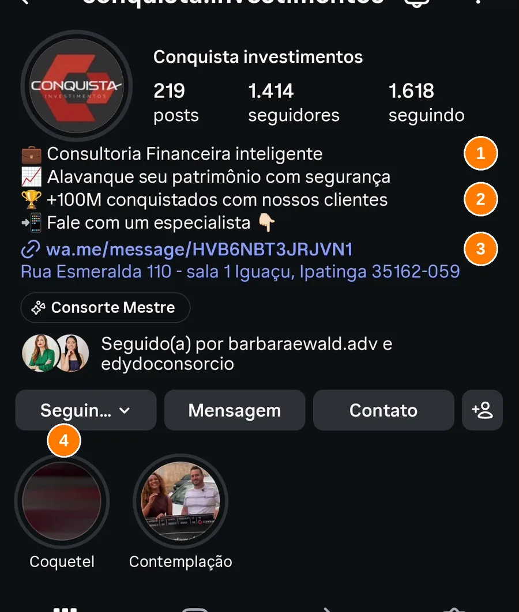
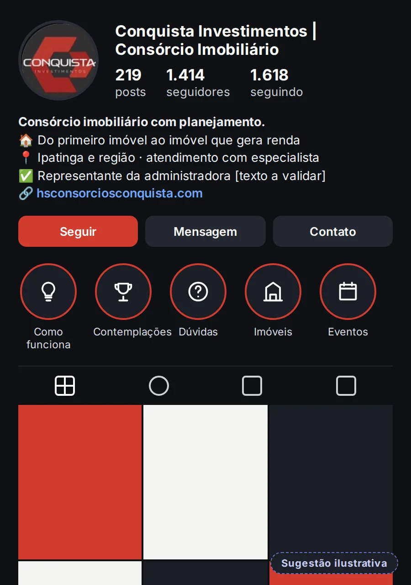
Na grade, cada peça tem uma linguagem: arte promocional, foto de evento, notícia de terceiros, vídeo solto. Quem passa pelo feed não reconhece a Conquista antes de ler o nome.
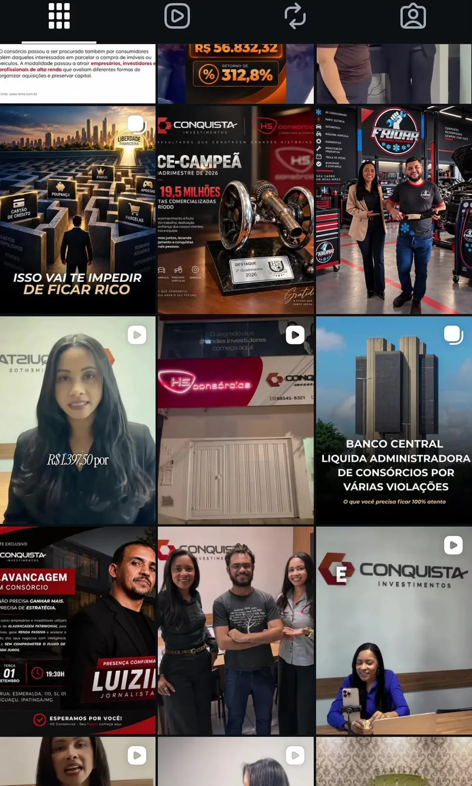
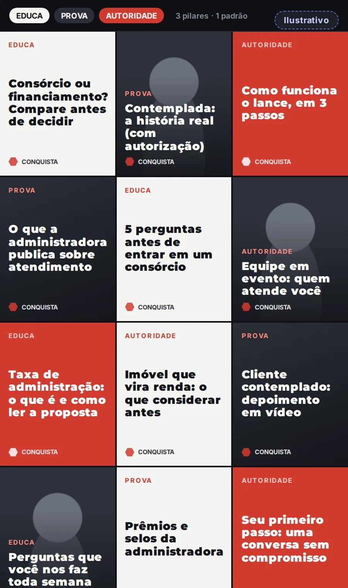
O post mais recente que vimos usa um dado de pesquisa com fonte (ponto positivo!), mas a capa é a imagem de uma matéria de terceiros e o convite final leva a um perfil pessoal.
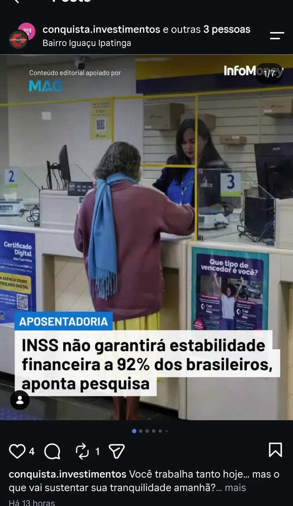
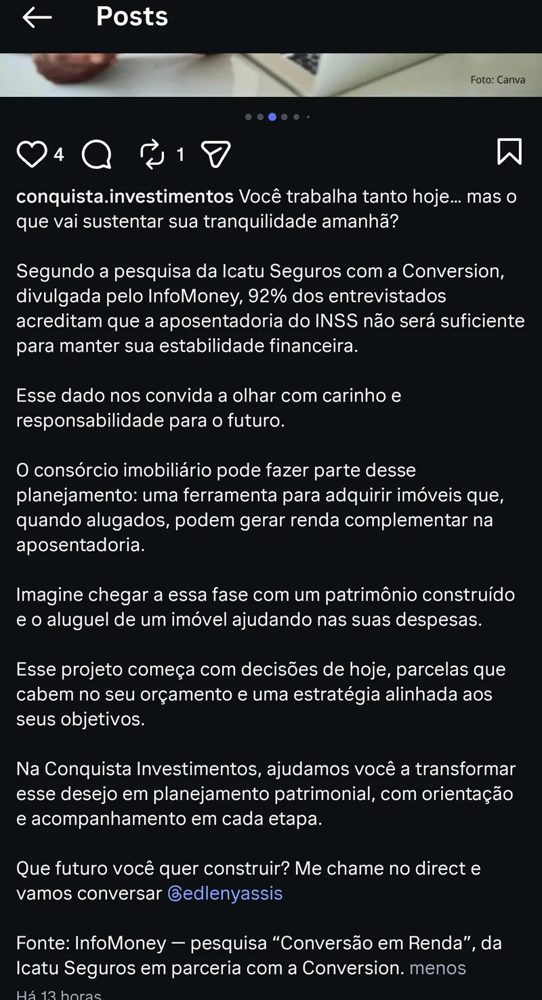
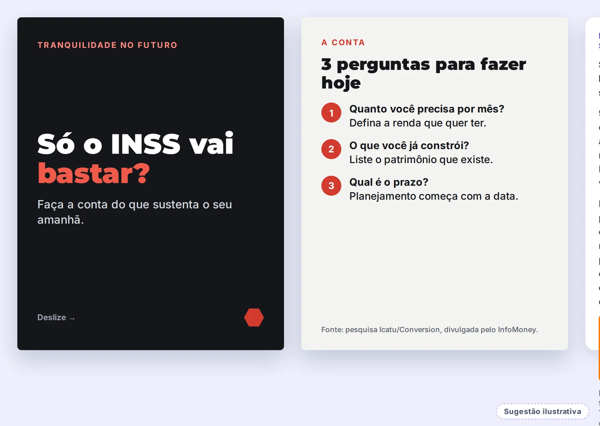
Entre os posts que vimos no vídeo, a diferença de resposta é grande. É uma amostra pequena e de datas diferentes, mas o padrão é útil.
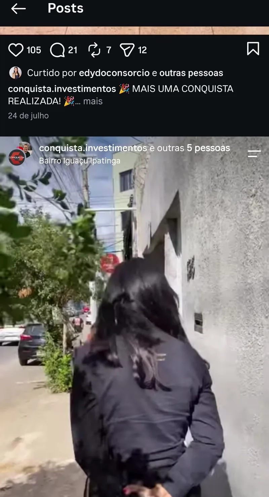
Fonte: prints do vídeo gravado em 14/10/2026. Post recente ainda tinha poucas horas; comparar com cautela.
O perfil de uma das sócias tem cerca de 3 vezes mais seguidores que o perfil da empresa. Isso é um ativo: é possível usá-lo para fortalecer a marca em vez de competir com ela.
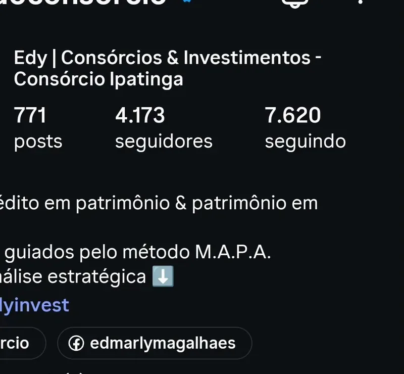
Perfil da empresa · 219 posts
Perfil da sócia · 771 posts
Quem pesquisa "conquista investimentos" encontra o site em primeiro lugar. Mas nem o perfil nem as publicações levam até ele. O melhor lugar para a prova social e o próximo passo está parado.
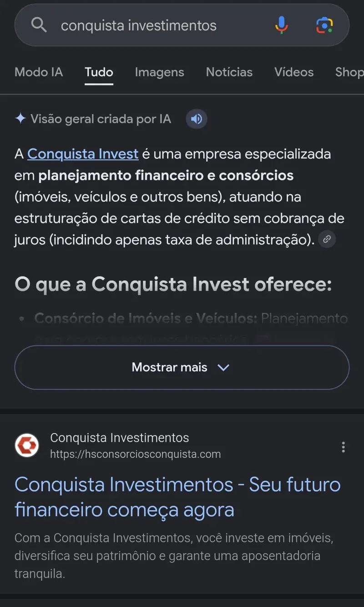
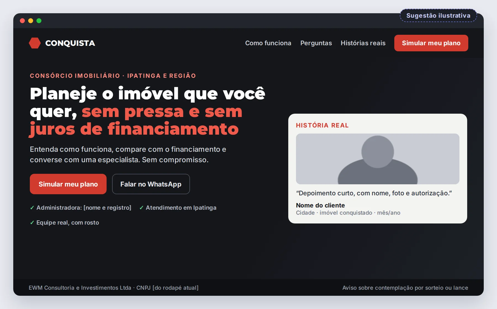
Consultamos site, Google e plataformas públicas. Registramos também o que não encontramos, porque ausência de prova também é informação.
| Item | O que encontramos | Fonte | Leitura |
|---|---|---|---|
| Site oficial | No ar. Título "Seu futuro financeiro começa agora"; promessa principal sobre patrimônio e renda passiva; formulário com aceite de privacidade; selos "32 anos de mercado" e "Grupo Herval – 65 anos". | hsconsorciosconquista.com | Ativo |
| Depoimentos | Duas histórias no site (médico cardiologista e empresária), sem foto e sem como verificar. Nenhum depoimento externo localizado. | Site | Fortalecer |
| Avaliações Google | Não localizamos ficha com avaliações de clientes nas buscas feitas. Se existir, vale ativar e pedir avaliações. | Google / buscas públicas | Não localizado |
| Reclame Aqui da Conquista | Não localizamos página própria. Isso não indica problema: indica que não há reputação construída ali. | Reclame Aqui | Não localizado |
| Reputação da administradora (HS Consórcios) | Reclame Aqui: nota 9,0/10, "Reputação Ótima", 98% de respostas, 92% de solução, 85,1% voltariam a fazer negócio (01/04 a 30/09/2026; 357 reclamações). É da administradora, não da Conquista. Só usar em comunicação com alinhamento da própria administradora. | reclameaqui.com.br/empresa/hs-consorcios | Ativo da parceria |
| Prêmio e reconhecimento | Arte de premiação da administradora (2º quadrimestre de 2026) publicada no feed. Vale transformar em prova permanente (destaque, site, material de venda). | Instagram (vídeo) | Ativo |
| Mídia local | Matéria com as proprietárias e coordenadores da HS Consórcios sobre diversificação de investimentos em Ipatinga (27/11/2025). | Instagram (vídeo) | Ativo |
| Redes e contatos | O Google também mostra um segundo perfil (@grupoconquistainvestimentos). O site não traz links para redes sociais e lista 2 telefones; o perfil usa outro link de WhatsApp e a legenda manda para o direct de uma sócia. O e-mail exibido no site difere do endereço do link de contato. | Google, site, Instagram | Unificar |
| Aviso e regulação | O site cita "garantimos", "renda passiva garantida" e "maior administradora independente do Brasil", sem fonte. Não há aviso sobre contemplação por sorteio ou lance, nem menção a regulador. | Site | Revisar com jurídico |
No celular, deslize a tabela para o lado.
Uma experiência anterior com agência que "não deu certo" costuma ter uma causa em comum: o anúncio foi ligado antes de o destino estar pronto. A ordem abaixo reduz esse risco.
Uma sequência simples, em que cada mês prepara o seguinte. O tráfego pago entra quando o destino e a prova estão de pé.
Esta leitura é um recorte do que o Raio-X mostra por dentro. Se fizer sentido, a gente conversa sobre o próximo passo, no seu tempo.
Conversar com a Yasmin Sem compromisso · resposta pelo WhatsApp